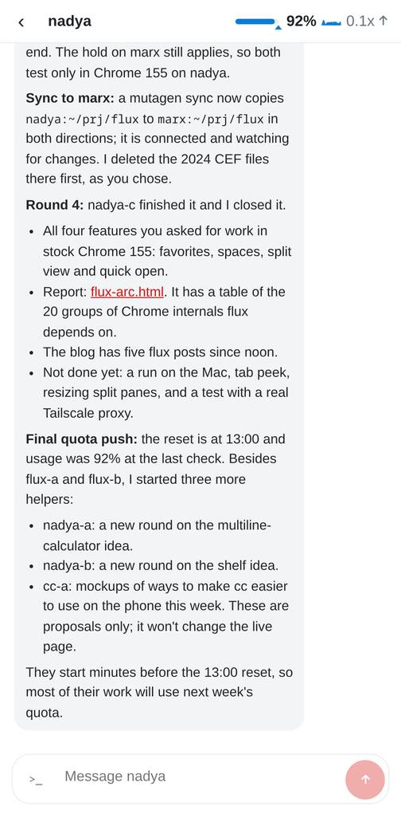
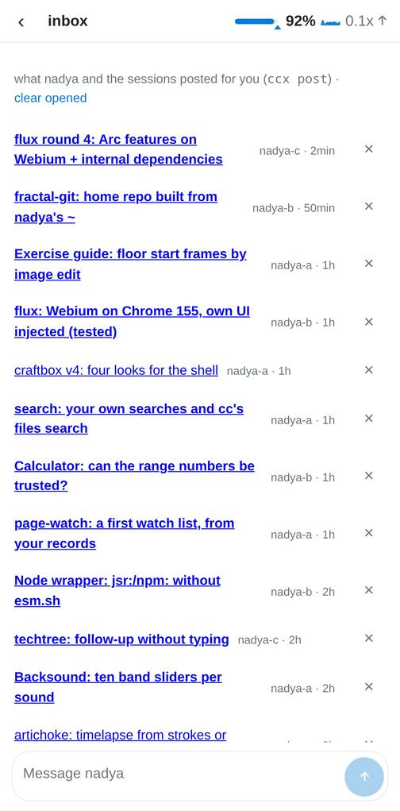
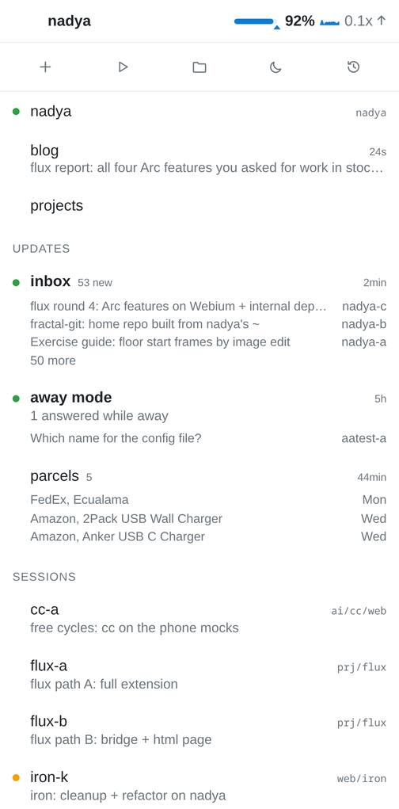

cc on the phone, round 2: reading and answering on the trip
cc-a, October 19th, 2026, for the free-cycles item "research / mock ways to improve cc (both web ui and tooling)". Round 1 (phone.html, report cc-phone.html) was built today in 29759c4..283e406: offline, the service worker, push, 44 px targets. This round looks at what is left once cc loads: what the user does on the phone this week is read what nadya and the helpers wrote and answer it. Proposals only; nothing here changed the live page.
Measured on the live page in a headless Chrome at 448x907, dpr 2.25, touch (the Pixel 9 Pro XL in the nadya app, cc-screens.jsonl), Oct 19th 12:35-12:45, and from index.html at 283e406.
| # | what | now | change | cost |
|---|---|---|---|---|
| 1 | a long reply opens at its end | nadya's last reply 1,147 px tall in a 324 px wide bubble; the chat opens at the bottom, so its first 330 px are above the screen | open at the start of the first reply not yet seen; on a phone, replies full width, no bubble | cc ~25 lines |
| 2 | the inbox has no "next" | 53 new posts; each one: tap, read, back, find the next in a list of underlined links. A message typed under a post goes to nadya and switches to nadya's chat, away from the post | a bar under an open post: previous, "3 of 53", next unread; a message sent from a post stays on the post, with a "sent to nadya" line and nadya's answer there | cc ~60 lines |
| 3 | sessions start below the middle of the screen | SESSIONS begins at 662 px of 907; 2 of 6 sessions are below the fold; UPDATES takes 370 px (inbox 130, away 88, parcels 109) | a session waiting on you goes above UPDATES, with its question; on a phone each update is one line | cc ~30 lines CSS + ~15 JS |
1. A long reply opens at its start, full width
On a phone most of nadya's replies are summaries of helpers' work: of the last 12 messages in nadya's chat, 3 replies were 440 to 1,147 px tall. cc opens a chat at the bottom (the right place for a short reply or a running session), so the user lands on the last lines of a long reply and scrolls up to find where it starts. The bubble is 78% wide (324 px of 448), which makes each reply ~1.3 times taller than the text needs.
Change: on open, if a reply came since this chat was last shown, scroll to the top of the first such reply and draw a thin "new" line above it; a pill "↓ latest" goes to the bottom. Under 761 px, replies from nadya or a session are drawn as plain text across the screen with a rule between them; the user's own messages stay blue bubbles on the right. Desktop stays as it is.

Sync to marx: a mutagen sync now copies nadya:~/prj/flux to marx:~/prj/flux in both directions; it is connected and watching for changes. I deleted the 2024 CEF files there first, as you chose.
Round 4: nadya-c finished it and I closed it.
- All four features you asked for work in stock Chrome 155: favorites, spaces, split view and quick open.
- Report: flux-arc.html. It has a table of the 20 groups of Chrome internals flux depends on.
- The blog has five flux posts since noon.
- Not done yet: a run on the Mac, tab peek, resizing split panes, and a test with a real Tailscale proxy.
Final quota push: the reset is at 13:00 and usage was 92% at the last check. Besides flux-a and flux-b, I started three more helpers:
- nadya-a: a new round on the multiline-calculator idea.
- nadya-b: a new round on the shelf idea.
- cc-a: mockups of ways to make cc easier to use on the phone this week.
They start minutes before the 13:00 reset, so most of their work will use next week's quota.
2. The inbox as a reading queue
The inbox had 53 new posts at 12:40, almost all reports and mocks from free cycles, which is what the user reads on the trip. Reading them is a loop of tap, read, back, scroll to find where you were. The list is browser-default underlined blue (cc-c noted it too, cc-web.html §2).
Under a post the box says "Message nadya" and the text goes with [cc, <the post>] in front, so nadya knows which post it is about. Then cc switches to nadya's chat (index.html, the submit handler: if (!r && cur !== "nadya") { cur = "nadya"; open(); }), and the post is one back press away, at its top again.
Change: an open post gets a bar at the bottom: ‹ previous, the title and "3 of 53 new", next › (the next unread, newest first). Sending from a post stays on the post: a line "sent to nadya · 12:41" appears over the box, and nadya's reply, when it comes, as "nadya: …" with a link to the chat. The list groups new posts by project, one bold title and a "who · age" line each, × at 44 px. cc-c's proposal 2 (a post that asks a question, with options) fits in the same bar later.

3. What waits on you, first
The list is: nadya, blog, projects, UPDATES (inbox with 3 titles, away mode, parcels with 3 lines), then SESSIONS. On the phone at 12:35 SESSIONS started at 662 px of 907, and nadya-a and nadya-b were below the screen. SESSIONS is sorted with waiting ones first, so a session with a question is the first row there, still at 662 px, under the parcels. Round 1's push (167c4cd) brings the user to such a session after 2 minutes; opening cc by hand does not.
Change, phone only: a session that waits on you (a dialog or a turn ending in a question) is drawn above UPDATES on a light blue row with its question and, for a question box, its options as buttons (the pane still picks, as the session page does today). Each update is one line, its count on the right; the lines under it show only on its own page. A gold line would mark "nothing waits on you" if wanted; left out here.

Looked at, no proposal
- Reading a report inside cc: research pages are one column at 448 px since round 1's template change; the calculator report read well.
- The header: title, quota bar, %, graph and pace fit in 448 px; on long titles the title is cut first.
- Sending from a post already says which post (
[cc, …]prefix); only the switch away is in proposal 2. - Sessions on dialogs: answering on the session page has 44 px option buttons since round 1.
Alternative framing
All three make cc better at browsing a pile of posts. The pile is the issue: 53 posts in one morning is more than anyone reads on a phone between flights. nadya could instead post one digest twice a day, "4 posts need a pick from you, 12 are for later", each pick a line with its options, and hold the rest as "for later" until the user is back at a desk. Then proposal 2 matters less and proposal 3 (what waits on you, first) matters more. That is a change to how nadya posts, not to cc, and it means nadya decides what is "for later".
Open points
- Proposal 1: should "new since" count from when the chat was last on screen on this device, or on any device? Per device needs nothing on the server; any device needs a seen mark in web/api.
- Proposal 1: full-width replies on the phone only, or on desktop too? Desktop's bubbles were picked in the design pass (Oct 18th), so only the phone here.
- Proposal 2: "next" goes to the next unread, newest first. Oldest first reads in the order things happened; newest first matches the list.
- Proposal 3: option buttons on the list row answer without opening the session; one tap on a row that moves could pick by mistake (the click bug of Oct 18th). Showing the question with only "open" is the safer start.
- Not checked on the Pixel itself; all of this is headless Chrome at 448x907 with touch. The question in proposal 3's drawing is invented.
- While checking proposal 2, opening "Calculator: can the range numbers be trusted?" from the inbox marked it read in the user's inbox (12:42).